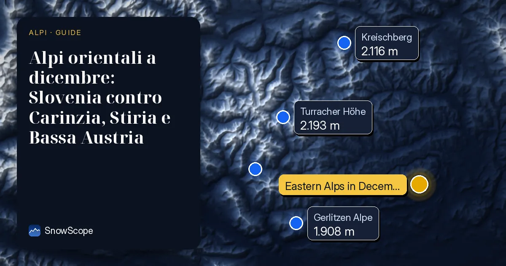

Alpi orientali a dicembre: Slovenia contro Carinzia, Stiria e Bassa Austria
Più si va a est lungo le Alpi, più i prezzi scendono, e con loro la neve di dicembre. La Slovenia ha gli skipass più economici di questo confronto, da 45 EUR al giorno, ma a Krvavec, Vogel, Rogla e Mariborsko Pohorje al massimo il 24 % dei nostri inverni aveva 30 cm a metà montagna nella settimana dal 15 al 21 dicembre. Il lato austriaco costa di più e rende di più.
Le previsioni neve in tempo reale per Eastern Alps in December nell'app SnowScopeAltezza neve, allerte powder e mappa 3D, gratis.
La risposta breve
Se a dicembre vi serve neve naturale, andate nelle aree austriache più alte: il Mölltaler Gletscher (8), Lachtal (7) o l'Hochkar (9). Se abitate vicino a Lubiana o Maribor e potete decidere il giorno stesso, le colline slovene sono un ottimo affare quando i loro bollettini neve sono buoni.
Una nota sul perimetro: confrontiamo solo località per cui abbiamo 46 inverni di storico neve. Le aree di Cechia, Slovacchia, Polonia, Romania e Bulgaria non sono ancora nel nostro storico e quindi qui non sono classificate.

Slovenia: economica, e onesta sulla neve
Il Krvavec (1) è il più alto dei quattro, con impianti fino a 1963 m, e il più frequentato da Lubiana. Il giornaliero costa 47 EUR e il 6 giorni 205 EUR. La metà montagna aveva 30 cm a metà dicembre nel 24 % dei nostri inverni, e solo nel 13 % delle settimane di Natale recenti.
Rogla (3) è simile: 49 EUR al giorno (44 EUR a inizio stagione), da 210 a 237 EUR per 6 giorni, e il 22 % degli inverni con 30 cm a metà montagna a metà dicembre. Vogel (2), sopra il lago di Bohinj, costa 49 EUR al giorno e 230 EUR per 6 giorni; la vetta aveva 30 cm nel 30 % degli inverni, la parte media nel 9 %. Mariborsko Pohorje (4), la più bassa, costa 45 EUR al giorno e in nessuno dei nostri inverni aveva 30 cm a metà montagna in quella settimana.
Carinzia: un ghiacciaio e due scommesse
Il Mölltaler Gletscher (8) è l'unica certezza della regione: 128 cm a metà montagna in un tipico 15 dicembre e 30 cm a metà dicembre in ogni nostro inverno. Il suo 6 giorni costava 332 EUR in bassa stagione nell'ultimo listino pubblicato (2025-26).
Il Nassfeld (5), al confine italiano, è grande (70 km di piste mappate) ma basso in fondo: la vetta aveva 30 cm a metà dicembre nel 63 % degli inverni, la parte media nel 22 %. Sei giorni costano 353 EUR a inizio stagione e 381 EUR dopo. La Turracher Höhe (6) è simile per neve (39 % a metà montagna) e prezzo (353 EUR per 6 giorni in bassa stagione).
Stiria e Bassa Austria: la via di mezzo
Lachtal (7), in Stiria, aveva 30 cm a metà montagna a metà dicembre nel 72 % degli inverni, per 62 EUR al giorno o 293,50 EUR per 6 giorni nel periodo meno caro. L'Hochkar (9), in Bassa Austria, aveva il 63 %, con prezzi giornalieri dinamici visti da 32,90 EUR nei giorni tranquilli di dicembre.
Entrambe hanno perso molta neve di dicembre negli anni: consideratele mete per quando la previsione è buona, non prenotazioni fisse.
Come scegliere
Settimana fissa prima di Natale, senza rischio neve: Mölltaler Gletscher. Weekend lungo economico deciso all'ultimo: Lachtal o l'Hochkar. Gite in giornata dalle città slovene: Krvavec o Rogla nei giorni in cui le piste risultano aperte e innevate. Per tutto il resto in Slovenia, gennaio e febbraio sono i mesi più sicuri.
Consigli per sciatori
- In Slovenia comprate giornalieri nei giorni buoni invece di una settimana di dicembre in anticipo.
- Per una settimana fissa di dicembre in questa regione, il Mölltaler Gletscher è l'unica neve quasi certa.
- Usate la mappa della neve qualche giorno prima: le colline orientali cambiano in fretta a ogni perturbazione.
- Leggete il bollettino valanghe sloveno, carinziano o stiriano prima di lasciare la pista.
Riferimenti e crediti
- Krvavec: official lift-pass prices (2026-27), checked 13 November 2026 rtc-krvavec.si/cenik-urnik
- Vogel: official lift-pass prices (2026-27), checked 13 November 2026 vogel.si/cenik-zima/
- Rogla: official lift-pass prices (2026-27), checked 13 November 2026 www.rogla.eu/sl/aktualna-ponudba/ceniki/zimske-aktivnosti/cenik-smucarskih-vozovnic-v-sezoni-20262027/
- Mariborsko Pohorje: official lift-pass prices (2026-27), checked 13 November 2026 www.visitpohorje.si/ceniki/smucisce/
- Nassfeld: official lift-pass prices (2026-27), checked 13 November 2026 www.nassfeld.at/en/Winter-World/Sun-Ski-World/Skigebiet-Nassfeld/Skipasspreise/Tages-Mehrtageskarten
- Turracher Höhe: official lift-pass prices (2026-27), checked 13 November 2026 www.turracherhoehe.at/en/winter/tariffs
- Lachtal: official lift-pass prices (2026-27), checked 13 November 2026 www.lachtal.at/en/tickets-prices/day-ski-passes/
- Mölltaler Gletscher: official lift-pass prices (2025-26), checked 13 November 2026 www.moelltaler-gletscher.at/en/price-list/winter/moelltaler-gletscher
- Hochkar: official lift-pass prices (2026-27), checked 13 November 2026 shop.hochkar.com/en/products/skitickets
Su questi numeri
Numeri della neve: storico neve SnowScope, 46 inverni passati (1980-81 - 2025-26) alle quote della località, corretto per la quota (una stima per un'area, non i bollettini della località); "buona neve" = 30 cm o più al suolo in media nella settimana. Mappa: la nostra altezza abituale al 15 dicembre distribuita sul terreno secondo la quota. Piste e impianti: mappatura OpenSkiMap. Skipass: listini ufficiali delle località, verificati il 13 novembre 2026; i prezzi possono cambiare.
Cita questo articolo
Per ricerca, didattica o stampa: numeri e grafici sono liberamente riutilizzabili con licenza CC BY 4.0 citando così.
SnowScope (2026), Alpi orientali a dicembre: Slovenia contro Carinzia, Stiria e Bassa Austria, https://snowscope.app/blog/it/2026/11/eastern-alps-december-ski-value-slovenia-carinthia-styria.html, consultato il 2026-11-14
SnowScope (Atlas Labs). (2026, November 14). Alpi orientali a dicembre: Slovenia contro Carinzia, Stiria e Bassa Austria. SnowScope snow reports. https://snowscope.app/blog/it/2026/11/eastern-alps-december-ski-value-slovenia-carinthia-styria.html
BibTeX
@misc{snowscope2026easternalpsdecemberskiva,
author = {{SnowScope (Atlas Labs)}},
title = {Alpi orientali a dicembre: Slovenia contro Carinzia, Stiria e Bassa Austria},
year = {2026},
month = nov,
howpublished = {\url{https://snowscope.app/blog/it/2026/11/eastern-alps-december-ski-value-slovenia-carinthia-styria.html}},
note = {Published 2026-11-14 17:54 UTC; accessed 2026-11-14}
}· CC BY 4.0 · Metodi, dati e strumenti →
Segui Eastern Alps in December
Gratis: un messaggio quando arriva la neve e il meteo ogni mattina.